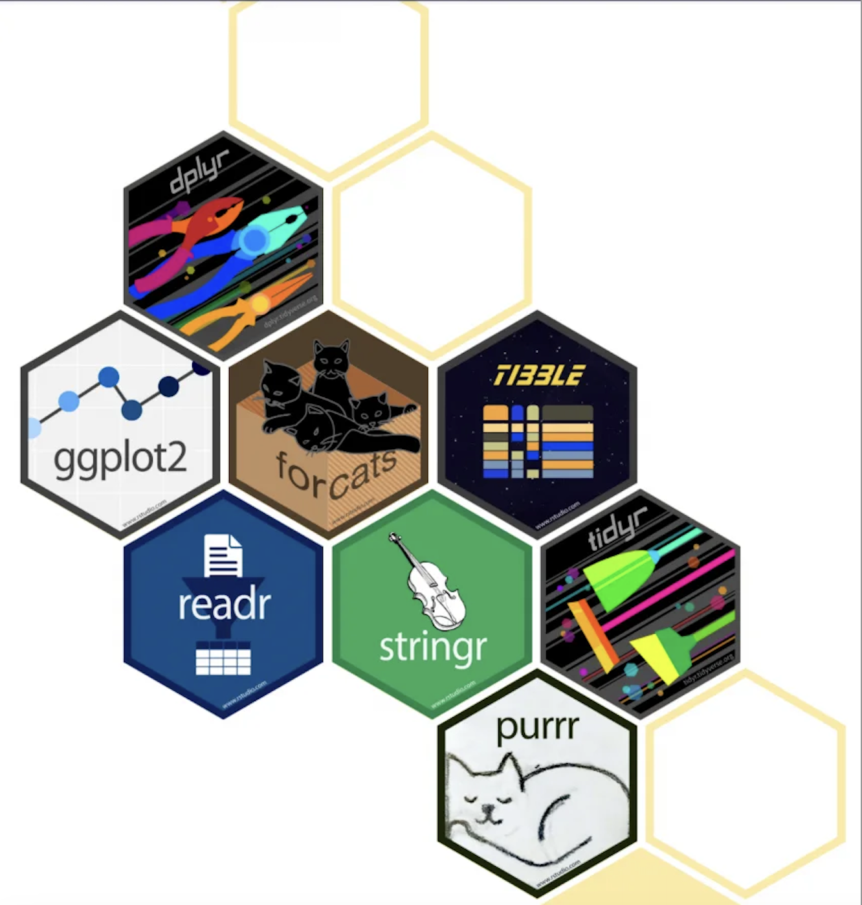
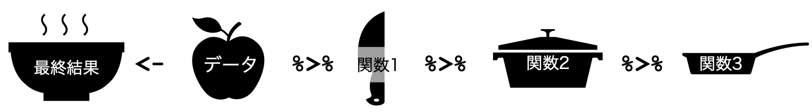
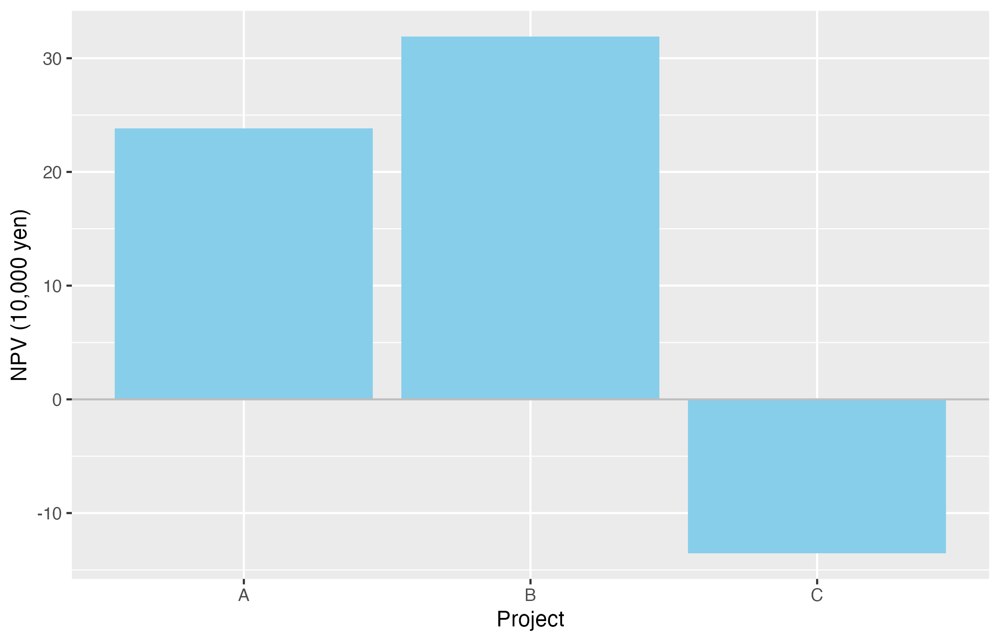
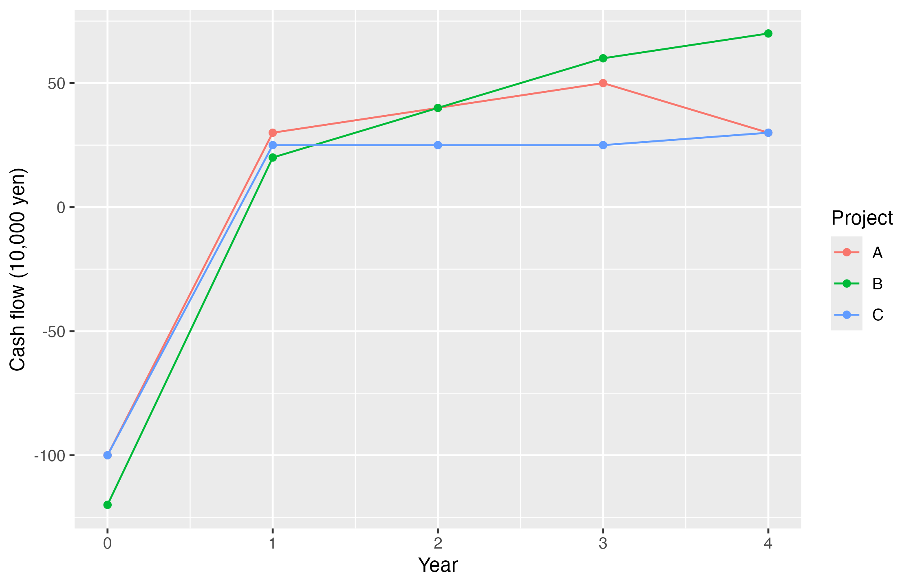

install.packages("tidyverse")第6回：tidyverse流データ分析
到達目標
- パイプでデータ処理を実行順に記述できる
- CSVの構造を確認し、必要な行と列を選べる
- 現在価値の列を作り、投資案ごとにNPVとIRRを集計できる
- ggplot2で投資案の比較や時点ごとの変化を図にし、保存できる
Chapter 1｜tidyverseとパイプ
作業の準備
empirical_finance.Rprojを開く。- File → New File → R ScriptからRスクリプトを新規作成し、
script/lesson06.Rとして保存する。すでに作成している場合は、そのファイルを開く。 - cash-flows-lesson06.csvをダウンロードし、Project内の
dataフォルダに保存する。図の保存に使うoutputフォルダも確認し、なければ作成する。
以下のコードは、このRスクリプトに順に記述し、実行して結果を確認する。前回のオブジェクトは自動復元されるが、ここで使うデータは改めて読み込む。
1. tidyverseを読み込む
第5回では、一つの投資案についてNPVとIRRを計算した。ここでは、複数の投資案のキャッシュフローを一つの表で管理し、投資案ごとに計算結果をまとめる。
tidyverseは、データの読み込み、整理、集計、作図を共通した考え方で行うためのパッケージ群である。第4回で使ったreadrもその一つであり、ここでは次の機能を組み合わせる。

| パッケージ | 主な用途 |
|---|---|
readr |
CSVの読み込み |
dplyr |
行・列の抽出、変数の作成、集計 |
ggplot2 |
グラフの作成 |
未導入の場合は、Consoleで次のコードを実行する。
続いて、Rスクリプトに次の行を記述する。Projectのオブジェクトが復元されても、使用するパッケージはlibrary()で読み込む。
library(tidyverse)2. パイプで処理をつなぐ
パイプ演算子|>を使うと、左側の結果を右側の関数の第1引数へ渡し、処理を実行する順に記述できる。第5回の投資案について、各キャッシュフローの現在価値を合計し、小数第2位まで表示する。
cash_flows <- c(-100, 30, 40, 50, 30)
present_values <- cash_flows / (1 + 0.08)^(0:4)
round(sum(present_values), digits = 2)[1] 23.81present_values |>
sum() |>
round(digits = 2)[1] 23.81どちらも結果は23.81となる。パイプを使ったコードは、「現在価値を合計し、その結果を小数第2位まで丸める」と上から読める。

tidyverseのコードでは、同じように処理をつなぐ%>%という表記も使われる。以下ではR標準の|>で統一する。パイプの後で改行すると、各処理を確認しやすい。
3. 計算に使う関数を用意する
第5回で作成したcalculate_npv()とcalculate_irr()の定義を、script/lesson06.Rにも記述する。計算方法は変えず、後で投資案ごとに関数を適用する。
第5回の関数を確認する
calculate_npv <- function(cash_flows, discount_rate,
periods = seq_along(cash_flows) - 1) {
present_values <- cash_flows / (1 + discount_rate)^periods
sum(present_values)
}
calculate_irr <- function(cash_flows,
periods = seq_along(cash_flows) - 1,
interval = c(-0.99, 1)) {
npv_function <- function(rate) {
calculate_npv(cash_flows, rate, periods)
}
result <- uniroot(
f = npv_function,
interval = interval,
tol = 1e-10
)
result$root
}Chapter 2｜投資案ごとにNPVとIRRを求める
1. CSVを読み込む
三つの投資案A・B・Cのキャッシュフローを使う。Aは第5回と同じ投資案であり、BとCを比較用に加えている。いずれも時点0に支払い、その後4年間に受け取る例である。金額の単位は万円とする。
cash_flow_data <- read_csv(
"data/cash-flows-lesson06.csv",
na = c("", "NA"),
show_col_types = FALSE
)
head(cash_flow_data)# A tibble: 6 × 3
project period cash_flow
<chr> <dbl> <dbl>
1 A 0 -100
2 A 1 30
3 A 2 40
4 A 3 50
5 A 4 30
6 B 0 -120read_csv()が返す表は、データフレームを拡張したtibbleである。
| 列名 | 内容 |
|---|---|
project |
投資案の名前 |
period |
キャッシュフローが発生する時点（年） |
cash_flow |
キャッシュフロー（万円、支払いは負） |
一つの列が一つの変数、一つの行が一つの観測を表し、一つの表に同じ種類の観測単位をまとめたデータをtidy dataという。この表の一行は「一つの投資案の一つの時点」に対応する。
dim(cash_flow_data)[1] 15 3colSums(is.na(cash_flow_data)) project period cash_flow
0 0 0 データは15行・3列で、欠損値はない。キャッシュフローに欠損がある場合は、元の資料を確認する。行を削除したり0に置き換えたりすると投資案の内容が変わるため、そのまま計算を進めない。
2. 行と列を選ぶ
filter()は条件を満たす行を、select()は指定した列を残す。投資案Aのキャッシュフローを取り出す。
project_a <- cash_flow_data |>
filter(project == "A") |>
select(period, cash_flow)
project_a# A tibble: 5 × 2
period cash_flow
<dbl> <dbl>
1 0 -100
2 1 30
3 2 40
4 3 50
5 4 30これらの関数では、表を第1引数として渡しているため、cash_flow_data$projectではなくprojectのように列名だけを記述できる。
練習：投資案Bのうち、時点1以降の行を抽出し、periodとcash_flowを表示しなさい。filter(project == "B", period >= 1)のように条件をカンマで区切ると、両方を満たす行を残せる。
なお、NPVとIRRの計算には時点0の支払いも必要である。以下の計算には、抽出前のcash_flow_dataを使う。
3. 現在価値の列を作る
mutate()は新しい列を作成する。各キャッシュフローを年8%で割り引き、現在価値の列present_valueを加える。
discount_rate <- 0.08
pv_data <- cash_flow_data |>
mutate(
present_value = cash_flow / (1 + discount_rate)^period
)
head(pv_data)# A tibble: 6 × 4
project period cash_flow present_value
<chr> <dbl> <dbl> <dbl>
1 A 0 -100 -100
2 A 1 30 27.8
3 A 2 40 34.3
4 A 3 50 39.7
5 A 4 30 22.1
6 B 0 -120 -120 各行のcash_flowとperiodを使って計算する。元の表はcash_flow_dataに残し、現在価値を加えた表をpv_dataに保存している。
4. 投資案ごとに集計する
group_by()で集計単位を指定し、summarise()で各グループを一行にまとめる。投資案ごとに現在価値を合計してNPVを求め、同じグループのキャッシュフローと時点をcalculate_irr()へ渡す。
project_results <- pv_data |>
group_by(project) |>
summarise(
NPV = sum(present_value),
IRR = calculate_irr(cash_flow, periods = period),
.groups = "drop"
) |>
mutate(IRR_percent = IRR * 100)
project_results# A tibble: 3 × 4
project NPV IRR IRR_percent
<chr> <dbl> <dbl> <dbl>
1 A 23.8 0.180 18.0
2 B 31.9 0.174 17.4
3 C -13.5 0.0192 1.92.groups = "drop"は集計後のグループ化を解除する指定である。IRRは小数、IRR_percentは百分率で表した値となる。
AのNPVは約23.81万円、IRRは約18.03%であり、第5回と一致する。summarise()にはsum()やmean()だけでなく、今回のような自作関数も使える。
5. 結果を並べ替える
arrange()は行を並べ替える。既定では昇順、desc()を付けると降順になる。NPVが大きい順に並べる。
project_results |>
arrange(desc(NPV)) |>
select(project, NPV, IRR_percent)# A tibble: 3 × 3
project NPV IRR_percent
<chr> <dbl> <dbl>
1 B 31.9 17.4
2 A 23.8 18.0
3 C -13.5 1.92NPVはBが約31.89万円、Aが約23.81万円、Cが約−13.52万円となる。このコードは結果を表示するだけであり、project_results自体の並び順は変わらない。
練習：discount_rateを12%に変更し、pv_dataの作成から集計までを再実行しなさい。NPVとIRRのうち、どちらが変化するか確認する。確認後は8%に戻して同じ処理を再実行し、次の作図へ進む。
Chapter 3｜ggplot2で結果を可視化する
1. NPVを棒グラフで比較する
第5回ではplot()で作図した。ggplot2では、データ、変数と軸の対応、図形を指定し、+で組み合わせる。library(tidyverse)によってggplot2も読み込まれている。
横軸を投資案、縦軸をNPVとする棒グラフを作る。
npv_plot <- ggplot(project_results, aes(x = project, y = NPV)) +
geom_col(fill = "skyblue") +
geom_hline(yintercept = 0, colour = "gray") +
labs(x = "Project", y = "NPV (10,000 yen)")
print(npv_plot)
ggplot()にはデータ、aes()には変数と軸の対応を記述する。geom_col()は指定した値を棒の高さとし、fillで塗りつぶしの色を設定する。geom_hline()は水平線、labs()は軸名などの設定である。
図をオブジェクトに保存した場合は、print()で表示できる。|>が処理結果を次の関数へ渡すのに対し、+は図に要素を追加する記号である。
練習：縦軸をIRR_percentに変更し、IRRを比較する棒グラフを作りなさい。縦軸名は"IRR (%)"とする。
2. キャッシュフローの変化を描く
NPVとIRRは複数時点のキャッシュフローを一つの数値にまとめた指標である。元のキャッシュフローも図で確認する。横軸を時点、縦軸を金額とし、投資案ごとに色を分ける。
cash_flow_plot <- ggplot(
cash_flow_data,
aes(x = period, y = cash_flow, colour = project)
) +
geom_line() +
geom_point() +
labs(x = "Year", y = "Cash flow (10,000 yen)", colour = "Project")
print(cash_flow_plot)
geom_line()は線、geom_point()は点を描く。aes()内のcolour = projectは投資案と色を対応させ、凡例も作成する。この例では投資案ごとに点が結ばれる。線は時点間の変化を示すものであり、その間にもキャッシュフローが発生するという意味ではない。
点の色だけを青に固定する場合は、geom_point(colour = "blue")と指定する。aes()内で変数に色を対応させる指定と、図形の色を直接固定する指定を区別する。
3. 図を保存する
ggsave()に保存先と図のオブジェクトを渡す。NPVの棒グラフを、Project内のoutputフォルダに保存する。
ggsave(
"output/npv-comparison.png",
plot = npv_plot,
width = 7,
height = 4.5
)widthとheightは、既定ではインチ単位での幅と高さである。作図済みのオブジェクトを保存するため、dev.off()は不要である。同名のファイルは上書きされる。保存後はFilesペインで画像を確認する。
作業を終えるときは、script/lesson06.Rを保存する。コード例（lesson06-example.R）には、本文の主要なコードをまとめてある。